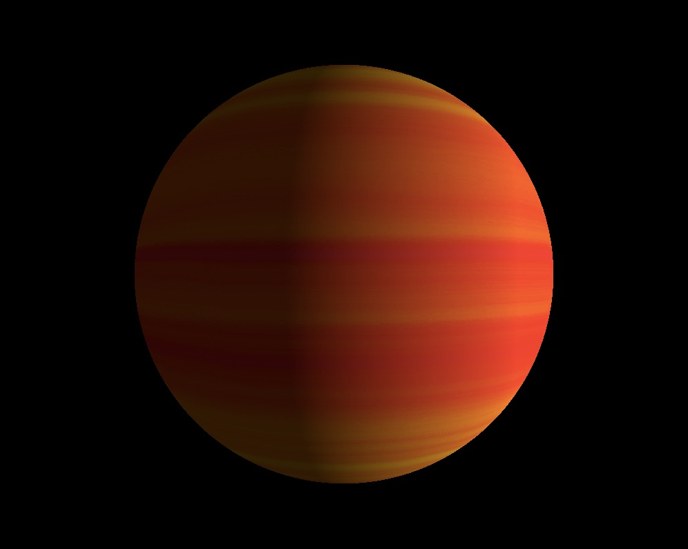
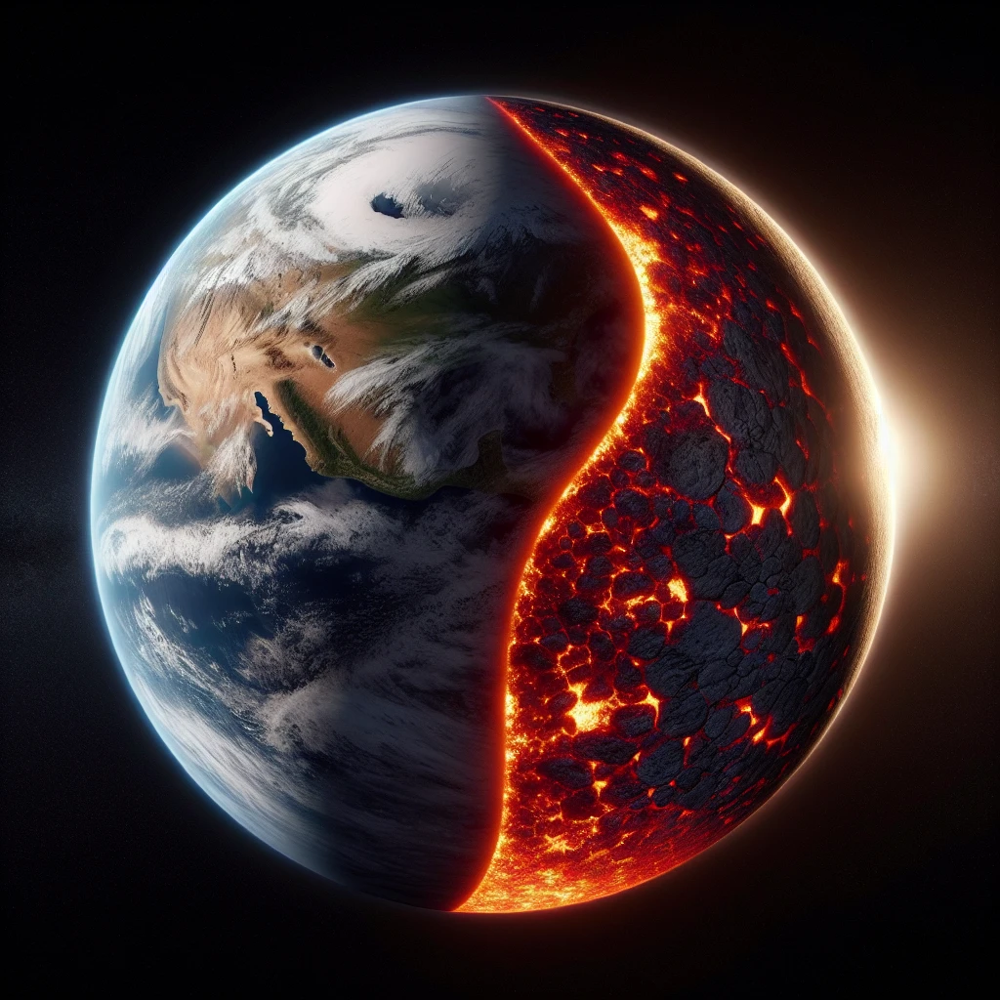
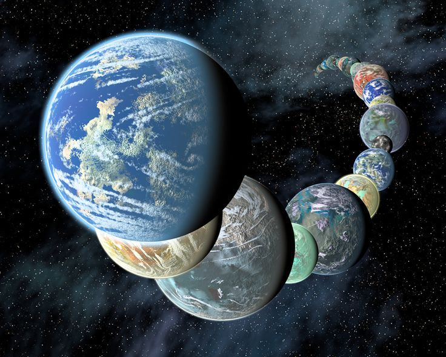

Exobolygók az univerzumban
Az exobolygók hallatán az emberek nagy többsége olyan Földön kívüli világokra gondol melyek lakhatónak minősülnek. Ez azonban csak részben igaz rájuk.Az exobolygó fogalom azokra a bolygónak minősíthető égitestekre értendő melyek a naprendszerünkön kívül helyezkednek el. Ezek nagy része nem népesíthető be, hiszen 30-35 százalékuk gázóriás valamint a maradék 65-70 százaléknak 98 százaléka nem lakható így mindösszesen 60 (eddig felvedezett) benépesíthető bolygót ismerünk. Íme három példa:
| Gázóriás | Távolság: 50 fényév Méret: 1.27x Jupiter Név: 51 Pegasi b |
 |
| Nem lakható | Távolság: 73 fényév Méret: 1.073x Föld Név: HD 63433 d |
 |
| Benépesíthető | Távolság: 4 fényév Méret: 1.07x Föld Név: Proxima Centauri b |
 |